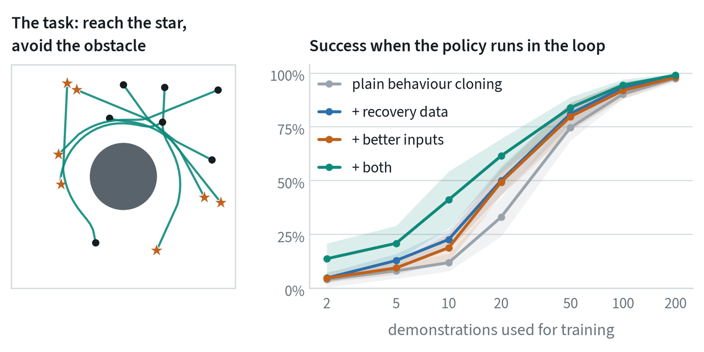
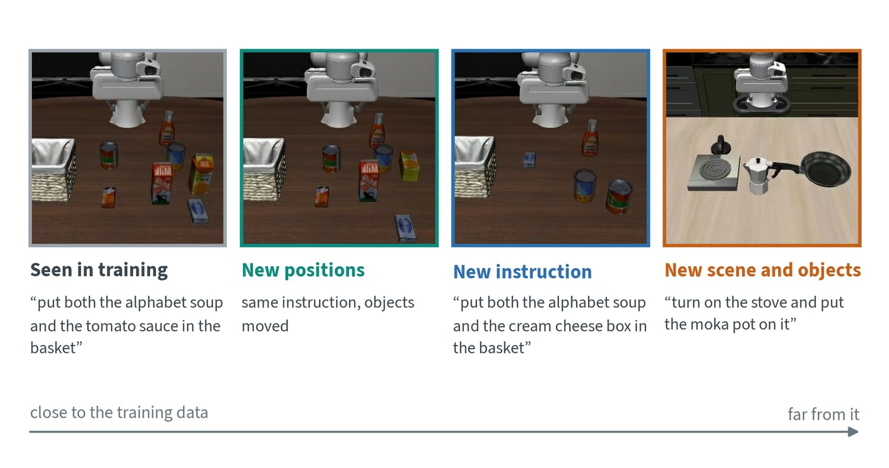

Two questions about any robot policy
Robot data is the most expensive ingredient in the field, so two questions follow every result. How much data did it take? That is data efficiency. What does it work on besides the data it saw? That is generalisation. They are linked: a method that generalises well needs fewer demonstrations of each new situation.
Neither has a single-number answer. Data efficiency is a curve, success against the amount of data. Generalisation is a set of separate tests, one for each way the world can differ from the training set.
A learning curve you can run yourself


The grey line is plain behaviour cloning. The other lines add one thing each. Recovery data means the demonstrator was nudged off course while recording, so the data shows how to get back. Better inputs means the policy is given the target and obstacle positions relative to itself, which is the form of the problem that matters.
| Demonstrations | Plain | + recovery data | + better inputs | + both |
|---|---|---|---|---|
| 10 | 12% | 23% | 19% | 41% |
| 20 | 33% | 50% | 49% | 62% |
| 50 | 75% | 81% | 80% | 84% |
| 200 | 98% | 99% | 98% | 99% |
Three things in this table hold well beyond the toy. The additions matter most when data is scarce: at 10 demonstrations they more than triple success. They combine. And they fade as data grows, because enough data teaches the same thing the hard way. A method that only looks better at one data size has not been shown to be more efficient.
What buys efficiency
Every lever below does the same job: it supplies knowledge from somewhere cheaper than new demonstrations.
| Lever | Where the knowledge comes from | Limit |
|---|---|---|
| Pretrained vision and language | Web images and text: what objects are and what words mean | Knows nothing about forces or the robot’s body |
| Pretrained robot policy | Thousands of hours of other robots’ data | Helps most when the new robot and tasks resemble the old |
| Co-training | Training on the new data together with larger related datasets | The mixture has to be weighted with care |
| Action chunking | Fewer decisions per task, so fewer chances to drift | Less reactive within a chunk |
| Augmentation | Known invariances: lighting, small shifts, colour | Cannot invent new behaviour |
| Recovery data and corrections | States the policy actually reaches when it errs | Needs a person in the loop |
| Better observations | A wrist camera, relative actions, body state | Has to be decided before data collection |
| Simulation and generated data | Physics engines and generative models | The gap to reality |
| Human video | People doing the task | No robot actions; they must be inferred |
The first two are why “pretrain once, adapt many times” took over robotics. The notes on foundation models and robot data cover them in detail.
How much is typical
Published results give rough orders of magnitude, not rules. A single task learned from scratch on one robot usually takes from tens to a few hundred demonstrations. Adapting a pretrained generalist policy to a new task takes a similar count and tends to give a more robust result. Working in places the robot has never seen is a different matter and depends on variety far more than on volume.
One careful study of this (Lin and colleagues, 2024) collected over 40,000 demonstrations and found that success in new environments with new objects grew roughly as a power law in the number of different environments and objects trained on. More demonstrations in the same environment helped quickly at first and then stopped helping. Their practical recipe was many environments with a modest number of demonstrations each. The rule of thumb is to spend the collection budget on variety.
Generalisation is several things


| What changes | Why it is hard | What helps |
|---|---|---|
| Object positions | The policy may have memorised where things were | Vary positions during collection; use a wrist camera |
| Object instances | A new mug has a new shape, colour and handle | Many instances per category; pretrained vision |
| Scene and lighting | Backgrounds leak into what the policy attends to | Many environments; augmentation |
| Instruction wording | The same task can be phrased many ways | A language-model backbone; paraphrased labels |
| Camera placement | The mapping from pixels to motion shifts | Fix the cameras, or vary them on purpose |
| Task | New combinations of known skills, or new skills | Broad multi-task data; the hardest of all |
| Robot body | Different joints, reach and gripper | Cross-embodiment training; shared action spaces |
“The model generalises” means little until the axis is named. Policies today are strongest on the first four rows and weakest on the last two.
Measuring it
- Report the curve. Give success at several data sizes, not one. State how many demonstrations and how many hours.
- Hold out one axis at a time. Test new positions, new objects and new scenes separately, so a failure can be traced.
- Compare at equal data. A method given more or better data has not been compared.
- Count pretraining. A model that needs 50 demonstrations after 10,000 hours of pretraining is efficient in new data, not in total data. Say which you mean.
The evaluation note covers how many trials each of these measurements needs.
Common mistakes
- Quoting one data size. Efficiency is the shape of the curve. One point cannot show it.
- Collecting volume without variety. A thousand demonstrations in one scene teach that scene.
- Testing on the training layout. Success where the objects stood during collection says little about anywhere else.
Terms
- Data efficiency
- How much task success a method gets from a given amount of data.
- Learning curve
- Performance plotted against the amount of training data.
- In-distribution
- Test conditions that resemble the training data.
- Out-of-distribution
- Test conditions that differ from the training data along some axis.
- Co-training
- Training on a small target dataset together with larger related ones.
- Few-shot
- Adapting to something new from a handful of examples.
Further reading
- Lin et al., 2024. Data Scaling Laws in Imitation Learning for Robotic Manipulation.
- Octo Model Team, 2024. Octo: An Open-Source Generalist Robot Policy.
- Kim et al., 2024. OpenVLA: An Open-Source Vision-Language-Action Model.
- Physical Intelligence, 2025. π0.5: a Vision-Language-Action Model with Open-World Generalization.